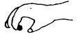

Kuesioner Praskrining untuk Bayi 12 Bulan
- Jika anda bersembunyi di belakang sesuatu/di pojok, kemudian muncui dan menghilang secara berulang-ulang di hadapan anak, apakah ia mencari anda atau mengharapkan anda muncul kembali?
- Letakkan pensil di telapak tangan bayi. Coba ambil pensil tersebut dengan perlahan- lahan. Sulitkah anda mendapatkan pensil itu kembali?
- Apakah anak dapat berdiri selama 30 detik atau lebih dengan berpegangan pada kursi/meja?
- Apakah anak dapat mengatakan 2 suku kata yang sama, misalnya: “ma-ma”, “da-da” atau “pa-pa”. Jawab YA bila ia mengeluarkan salah—satu suara tadi.
- Apakah anak dapat mengangkat badannya ke posisi berdiri tanpa bantuan anda?
- Apakah anak dapat membedakan anda dengan orang yang belum ia kenal? la akan menunjukkan sikap malu-malu atau ragu-ragu pada saat permulaan bertemu dengan orang yang belum dikenalnya.
- Apakah anak dapat mengambil Benda kecil seperti kacang atau kismis, dengan meremas di antara ibu jari dan jarinya seperti pada gambar?

- Apakah anak dapat duduk sendiri tanpa bantuan?
- Sebut 2-3 kata yang dapat ditiru oleh anak (tidak perlu kata-kata yang lengkap). Apakah ia mencoba meniru menyebutkan kata-kata tadi ?
- Tanpa bantuan, apakah anak dapat mempertemukan dua kubus kecil yang ia pegang? Kerincingan bertangkai dan tutup panel tidak ikut dinilai.